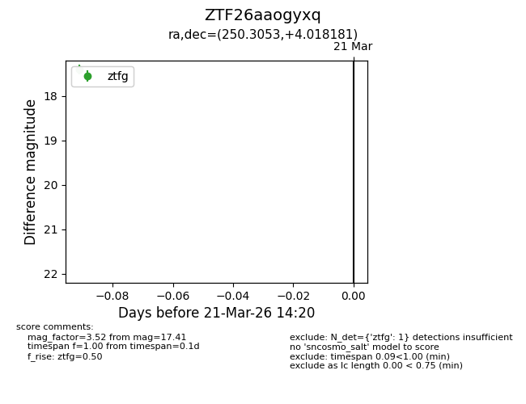
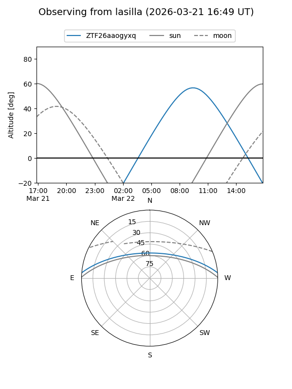
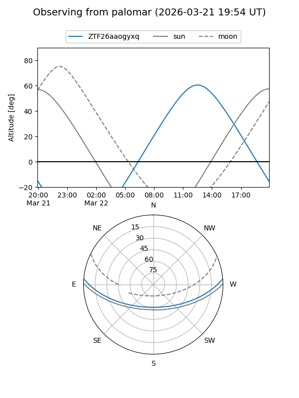

ZTF26aaogyxq
Target ZTF26aaogyxq at 2026-03-21 14:22
Aliases and brokers:
FINK: link
Lasair: link
ALeRCE: link
alt names
ZTF26aaogyxq (ztf,fink_ztf)
Coordinates:
equatorial (ra, dec) = 250.3053,+4.01818
equatorial (HMS+DMS) = 16:41:13.26,+04:01:05.45
galactic (l, b) = (20.6924,+30.64220)
Flags:
Photometry:
last ztfg=17.41
1 ztfg detections
Lightcurve

Visibility


Additional plots